Маленький росчерк для A2.
Три версии с одним новым акцентом. Наведите мышь на номер, чтобы сравнить; на телефоне нажмите.



D1 / Петля на волне
Небольшой завиток продолжает правый конец перекладины. Один лёгкий акцент.



D2 / Росчерк у буквы
Тонкий завиток завершает ножку t и делает знак похожим на личную подпись.



D3 / Завиток внизу
Маленькая петля встроена в начало нижней волны. Верхняя часть остаётся спокойной.